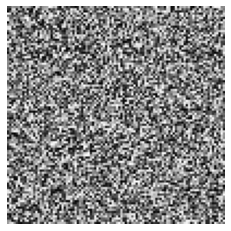
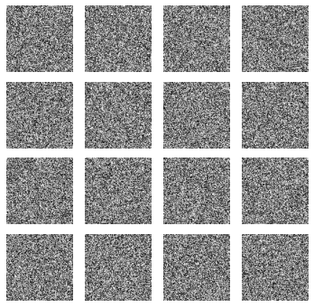
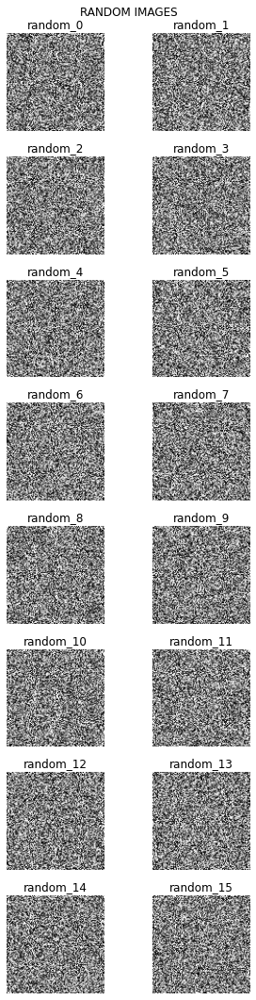

from torch_snippets import *
im = np.random.rand(100, 100)
show(im)
Show is intended to show numpy-arrays/PIL-images
from torch_snippets import *
im = np.random.rand(100, 100)
show(im)
show(im, sz=4)
Show will even accept pytorch Tensors and show them as images, even if they are on GPU and have channels first
It can accept bounding boxes as tuples of (x,y,X,Y) which can be integers (i.e., absolute coordinates) or fractions (between \([0,1]\)). There’s provision to give bb_colors and texts as well
show(im, bbs=[(0, 0, 0.5, 0.35), (0, 0.2, 0.35, 0.95)])
show(im, bbs=[(0, 0, 0.5, 0.35), (0, 0.2, 0.35, 0.95)], bb_colors=["r", "g"])
show(
im,
bbs=[(0, 0, 0.5, 0.35), (0, 0.2, 0.35, 0.95)],
bb_colors=["b", "g"],
texts=["bb1", "bb2"],
sz=10,
text_sz=15,
)Clipping input data to the valid range for imshow with RGB data ([0..1] for floats or [0..255] for integers).
Clipping input data to the valid range for imshow with RGB data ([0..1] for floats or [0..255] for integers).
Clipping input data to the valid range for imshow with RGB data ([0..1] for floats or [0..255] for integers).
It can also read a file path directly and display the image
show("../docs/images/company_logo_big.png", sz=3)
if the input is not an image or string, show will simply display the given input as intended by jupyter notebook
df = pd.DataFrame(np.random.rand(100, 2))
show(df)| 0 | 1 | |
|---|---|---|
| 0 | 0.242478 | 0.929517 |
| 1 | 0.971890 | 0.506750 |
| 2 | 0.139826 | 0.753227 |
| 3 | 0.864799 | 0.524166 |
| 4 | 0.563610 | 0.135709 |
| ... | ... | ... |
| 95 | 0.379874 | 0.639771 |
| 96 | 0.993731 | 0.811343 |
| 97 | 0.621683 | 0.763054 |
| 98 | 0.844509 | 0.915156 |
| 99 | 0.314272 | 0.392418 |
100 rows × 2 columns
chart = Chart(df).mark_circle().encode(x="0:Q", y="1:Q")
show(chart.interactive())display multiple images Subplots is a wapper around plt.subplots that accepts a list of images, number of columns as nc and additional kwargs
from torch_snippets import subplots
ims = [np.random.rand(100, 100) for _ in range(16)]
subplots(ims, nc=4, sz=5)
subplots(
ims,
nc=2,
sz=(5, 15),
suptitle="RANDOM IMAGES",
titles=[f"random_{i}" for i in range(16)],
)